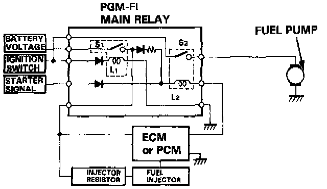

Main Relay (Computer/Fuel System): Description and Operation

PURPOSE
The main relay, consists of two relays in one assembly. Relay (1) supplies battery voltage to the Engine Control Module (ECM), fuel injectors and power to the second relay. Relay (2) supplies power to the fuel pump upon command from the ECM.
OPERATION
The first relay is energized whenever the ignition switch is turned on. The second relay is energized for two seconds when the ignition is turned on, when the engine is cranking, and when the engine is running, to supply power to the fuel pump.
CONSTRUCTION
A 12 Volt multiple coil relay in a common sealed housing.